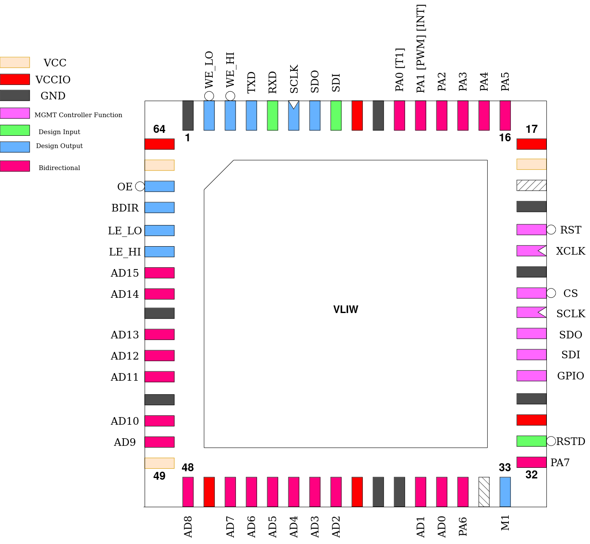

VLIW
This design is a Very Long Instruction Word, Explicitly Parallel, 32-bit microprocessor. It fetches instructions in “packs” of 3 opcodes, totalling a 128-bit instruction word. These are, unless otherwise specified by breaks, executed in parallel in 3 execution units.
Due to the RISC instruction set making every instruction except divide single-cycle, this results in up to 3 instructions executed in a single clock cycle during the execution step. This makes memory bandwidth the limiting factor, so a set of 63 general-purpose registers is provided, together with a 32 entry wide instruction cache.
Pinout
Pin # |
Name |
Type |
Summary |
|---|---|---|---|
|
RSTD |
I |
Active low design reset |
|
PA[7] |
IO |
GPIO Port A, bit 7 |
|
M1 |
O |
Pulses high during each instruction execution |
|
PA[6] |
IO |
GPIO Port A, bit 6 |
|
AD[15:0] |
IO |
Bi-directional, multiplexed address/data bus |
|
LE_HI |
O |
Address Latch Enable, MSBs |
|
LE_LO |
O |
Address Latch Enable, LSBs |
|
BDIR |
O |
Indicates current direction of bus lines |
|
OE |
O |
Memory Output Enable |
|
WE_LO |
O |
Memory Write Enable, MSBs |
|
WE_HI |
O |
Memory Write Enable, LSBs |
|
TXD |
O |
UART Serial Transmit |
|
RXD |
I |
UART Serial Receive |
|
SCLK |
O |
SPI Master Serial Clock |
|
SDO |
O |
SPI Master Serial Data Out |
|
SDI |
I |
SPI Master Serial Data In |
|
PA[0] |
IO |
GPIO Port A, bit 0, with Timer Output alternate function |
|
PA[1] |
IO |
GPIO Port A, bit 1, with PWM Output or Interrupt Input alternate functions |
|
PA[5:2] |
IO |
GPIO Port A, bits 2-5 |
Memory Bus
To interface with up to 4GiB (minus the internal MMIO range) of external memory, a Address/Data bus is provided, which transfers address and data information 16 bits at a time. Externally, the chip addresses memory as an array of 16-bit values. Each address emitted is a 16-bit word address with a length of 31 bits. As both halves of the address are multiplexed onto the same pins, transparent latches (ie 74LVC573) need to be used to latch the full address (a CPLD may also be used). The pins LE_LO and LE_HI can be used as enables for these latches to first pass through, then latch the address halves.
This is then followed by the actual data read or write. A low level on OE indicates a read. However, because VLIW has instructions for only storing single bytes, it is possible that only one half of a 16-bit word needs to be modified. The outputs WE_LO` and WE_HI indicate which halves of the currently addressed word need to be updated:
|
|
Halves updated |
|---|---|---|
|
|
Neither (no write) |
|
|
Low half, bits 0 - 7 |
|
|
High half, bits 8 - 15 |
|
|
Both halves, bits 0 - 15 |
Most parallel RAM ICs with a 16-bit organization support this addressing scheme with two separate write enable signals, so no additional logic should be required to connect memory to this design.
During every bus transaction, the BDIR pin continuously indicates the direction of the bus lines, in case a active level shifter is on the bus or this information is needed in bus contention prevention logic.
Example timing diagram of the fetch and execute of a pack containing one 32-bit store instruction, showing most possible bus states:
Note that WES in custom_settings is equal to 2 in this example.
Instruction Cache
As memory throughput is the main bottleneck for processing speed, a 32-entry wide instruction cache exists to aleviate this problem for instruction fetches. Whenever a instruction needs to be fetched, its address is compared to all cache entries. If a cache hit is found, the instruction is fetched from cache and no external memory transaction takes place. Except for Branch-Type and Jump-Type instructions, this takes only a clock cycle, leading to an optimal throughput of one pack per clock unless interrupted by division instructions or Loadstore-Type instructions.
Jump-Type and Branch-Type (if the branch is taken) instructions introduce a one clock-cycle access penalty on the cache due to the change in PC. Address latch enable signals may be generated during this extra cycle, but no memory read will actually take place.
If no matching entry is found in the cache, a cache miss, the pack is instead loaded from memory as normal. In this case, the loaded pack and its address are stored in the cache, overwriting a random entry.
The cache is disabled by default. To enable it, two bits need to be set. First, the cache enable bit (CEN) in custom_settings and second the ICEN bit in the IO-Block. The cache is entirely inactive and all its entries cleared on every clock tick for as long as either bit is zero. This also means that should a cache flush be desired, this can be accomplished in software by clearing ICEN before setting it again.
Programming Model
As a Very-Long Instruction Word (VLIW) processor, this design does not execute instructions one at a time, but instead fetches 128-bit wide “packs”, that are split into three 42-bit opcode words and two bits encoding “breaks”. Unless interrupted by breaks, these three opcode words are dispatched to three execution units and processed in parallel in a single clock cycle (except for division operations).
This makes memory bandwidth the main bottleneck for performance, so a relatively large file of 62 general-purpose registers is provided, r1 - r62. Register r0 is hard-wired to zero. It always reads zero and writes to it are discarded. Register r63 is used to store a return address during interrupt handling. These registers are all 32-bits wide.
There is also a file of 8 1-bit predicate registers each storing a simple true (logic ‘one’) or false (logic ‘zero’) boolean value, labeled p0 - p7. These can be loaded with the result of a arithmatic or logical comparison using Predicate-Type instructions and then used to mask any instructions, including other Predicate-Type instructions. Predicate p0 is hard-wired to true and cannot be written to another value, to prevent the processor from falling into a state where all predicates are false and instruction execution ceases entirely.
The Program Counter PC always points to the current pack being executed. As packs are alligned to 128-bit boundaries, the Program Counter is stored as a 28-bit value which is left-shifted by four binary places to obtain the byte address of the current pack.
Memory is logically segmented into 8-bit bytes, but 16-bit (a ‘halfword’) or 32-bit (a ‘word’) wide values may be loaded or stored. Addresses of 16-bit values must be alligned to 16-bit (two byte) boundaries and addresses of 32-bit values must be alligned to 32-bit (four byte) boundaries.
Instruction Set Architecture
Individual instructions are 42-bits wide and always belong to one of seven types, as encoded by the least-significant three bits of the instruction word. These are:
No-op
ALU-Type
Immediate-Type
Loadstore-Type
Branch-Type
Jump-Type
This three bit type field is then followed by a 5-bit opcode and a 3-bit predicate index. The meaning of the opcode value as well as the remaining instruction bits change depending on the instruction type.
No-op
Any instruction with this type has no effect on the processor state.
ALU-Type
Instructions with this type perform a arithmatic or logical operation between two registers. They encode two source registers, ri1 and ri2, and a destination register rd. The operation is performed between the two source register’s values and the result stored in the destination register.
Some operations are able to be performed on just one 16-bit half of the involved registers. If the W bit is set, this halfword operation is selected and the U bit determines which half is operated on. A value of zero for U selects the least-significant half while a value of one selects the most-significant half.
Only the selected half of the source registers is considered and only that half of the destination register is updated. This is important as two execution units may update separate halves of the same register, combining their results.
The following codes are valid for the opcode field (note that some operations only make use of ri1, making ri2 a don’t-care):
Opcode |
Operation |
Halfword operation supported |
|---|---|---|
0 |
|
Y |
16 |
|
Y |
1 |
|
N |
2 |
|
N |
18 |
|
N |
3 |
|
N |
4 |
|
N |
5 |
|
Y |
6 |
|
Y |
7 |
|
Y |
8 |
|
N |
9 |
|
N |
24 |
|
N |
25 |
|
N |
10 |
|
N |
11 |
|
N |
26 |
|
N |
27 |
|
N |
12 |
|
Y |
13 |
|
Y |
The operations 3 and 4 perform either a signed or unsigned comparison and emit a constant 1 into rd if the comparison is true or a constant 0 otherwise.
Notice: division and modulo operations will stall the whole processor for 33 clock cycles, even when only taking place on one execution unit.
Immediate-Type
Instructions with this type behave very similarly to ALU-Type instructions except that ri2 is replaced by an immediate value as the second operand. The S bit determines if this immediate is treated as a signed or unsigned 16-bit value.
If the U bit is set, regardless of the state of the W bit, the immediate value is interpreted as unsigned, regardless of the state of the S bit, and left-shifted 16 binary places.
The following codes are valid for the opcode field:
Opcode |
Operation |
Halfword operation supported |
|---|---|---|
0 |
|
Y |
16 |
|
Y |
1 |
|
N |
2 |
|
N |
18 |
|
N |
3 |
|
N |
4 |
|
N |
5 |
|
Y |
6 |
|
Y |
7 |
|
Y |
8 |
|
N |
9 |
|
N |
24 |
|
N |
25 |
|
N |
10 |
|
N |
11 |
|
N |
26 |
|
N |
27 |
|
N |
Note that some operations still differentiate between signed and unsigned variants separately from the S bit and the state of this bit should always match the operation type in these cases. If the operation is unsigned but the S bit is set, the immediate value is still sign-extended to 32-bits but treated as unsigned by the operation.
LIPC
There is one special case instruction encoding, which is for lipc. This instruction adds the value of ri1 to the current Program Counter value and stores the result in rd. It is technically encoded as an immediate arithmatic right-shift with an illegal shift amount:
Once again note that the Program Counter is a 28-bit value, which is left-padded with zeroes to 32 bits before the addition.
Loadstore-Type
Instructions of this type are used to access memory contents. They can load or store 8-bit bytes, 16-bit halfwords or 32-bit words, which are byte-addressed. Addressing is based on a index register, ridx, and a 17-bit immediate value. The immediate value is sign-extended to 32-bits and added to the value of ridx to obtain the effective memory address to operate on. Note that halfword accesses must be aligned to 16-bit boundaries (even addresses) and word accesses to 32-bit boundaries (addresses divisible by four).
rd/rs encodes which register to use as a data source for stores and which register to use as a destination for loads. The L fields indicate the width of the memory access: zero for a byte, one for a halfword and two for a word. A value of three is invalid.
The S bit, when set, indicates that this is a store instruction to memory, otherwise it is a load instruction from memory. The E bit is only valid for load instructions fetching bytes or halfwords and indicates, if set, that the loaded value is signed and needs to be sign-extended to fit the 32-bit destination register. If the bit is clear, the value is zero-extended instead.
Load instructions (S clear) specifically share the property of ALU-Type and Immediate-Type instruction of being able to write only part of the destination register, which is determined by the two-bit M field. This field is valid for byte and halfword accesses only.
During byte accesses, the field may be optionally set to either 2h or 3h. In the former case, only the least significant 16-bits of rd are updated. In the latter case, only the last significant 8-bits of rd are updated. All other values of M cause the full register to be written.
During halfword accesses, the field may be optionally set to 3h or 2h. In both cases, only the last significant 16-bits of rd are updated. All other values of M cause the full register to be written.
Jump-Type
Instructions of this type affect a unconditional, indexed jump by loading the PC with a new value calculated by sign-extending a 17-bit immediate to 32-bits and adding it to the value of ridx. Additionally, the value of PC plus one, equaling the address of the instruction following the jump, is stored in register rd (known in this case as the Link Register).
Of note is that this instruction is NOT byte-addressed but instead has to produce a 28-bit instruction index, the effective byte address of which is the instruction index shifted left by four binary places. The value stored in rd is also a 28-bit value zero-extended to 32-bits, as the PC is 28-bits wide.
Branch-Type
Instructions of this type affect a conditional relative branch by comparing the values of the register values of ri1 and ri2. If the specific comparison returns true, the 17-bit immediate value is sign-extended to 28-bits and added onto the PC. Once again note that the PC does not contain a byte index, but an instruction index. See Jump-Type instructions.
The opcode specifies what type of comparison is used while the S bit indicates if the comparison is to be signed or unsigned. If it is set, the register values are treated as signed values, and as unsigned values otherwise.
Opcode |
Comparison |
|---|---|
0 |
|
1 |
|
3 |
|
4 |
|
5 |
|
7 |
|
There is one exception to this table, which is when the opcode is 0 (==) or 4 (!=) AND the S bit is set. In this case, the comparison is only against the signs of the two values, so ri1[31] == ri2[31] for opcode 0 and ri1[31] != ri2[31] for opcode 4.
Predicate-Type
Instructions of this type load the value of a predicate based on the result of a comparison between the register values of ri1 and ri2. The opcode encoding and behavior of the comparison operation is the same as in Branch-Type instructions except that the true or false result of the comparison is literally loaded into the predicate register dp.
Note that predicate instructions themselves may also be predicated.
Predicates
Predicates are a way of conditionally skipping execution of single instructions without branches. This is more optimal in certain scenarios as it can avoid using breaks, filling slots with nops or the limitations on branch/jump-type instructions.
Every instruction has to specify a predicate index. This predicate is accessed when the instruction passes into an execution unit and, if the predicate is true, has no further effect on the instruction execution. Should the predicate be false, however, the whole instruction is masked and ignored, causing it to have no effect on the processor state. This is accomplished internally by replacing the opcode of the instruction with that of a No-op if the predicate is false.
Predicates may be set using Predicate-Type instructions by comparing register values and using the comparison result as the boolean value to store into a predicate register.
Note that predicate index zero (p0) is hard-wired to true and cannot be overwritten. Instructions specifying p0 will always execute and it is therefore the implied predicate index when none is specified in the assembly language.
Breaks
Sometimes, parallel execution of all three instructions may not be possible, such as when a data dependency is present in the code. For this reason, breaks may be inserted after the first and/or second instruction of a pack. Breaks cause the processor to process instructions in sequence rather than in parallel, though this does cause instruction execution to extend by one clock cycle for every break used.
If both breaks are set, all three instructions in the pack execute serially. If only the break after the first instruction is set, the first instruction will execute alone, followed by the remaining two in parallel. Similarly, a break set only after the second instruction causes the first two to execute in parallel, followed by the remaining one on its own.
Limitations
Almost all possible combinations of instruction types within a pack are allowed. The only two limitations are:
Only one Jump- or Branch-Type instruction may execute at once
Only one Loadstore-Type instruction may execute at once
“At once” in this case refers to parallel execution. Breaks or predication may be used to avoid these limitations.
Similarly, it is not possible for multiple instructions to write to the same parts of the same register if they are parallel executed. Any of these three cases are known as “data collissions”.
This, however, does not always mean these combinations are illegal. If they occur, the instructions are “prioritized” based on their order in the pack from most-significant bit position to least-significant bit position. Only the highest priority instruction in a signal collission has an effect. In assembly language, instructions are listed most-significant first.
For example, if all three instructions in a pack are ALU-Type with the same value for the rd index, only the instruction appearing first in the assembly listing is executed and writes to rd.
This behavior can potentially be useful when combined with predication or when multiple Branch-Type instructions with different conditions appear in the same pack. The only truly illegal combination is multiple Jump-Type instructions with different, non-zero values for the rd index, which may lead to undesired behavior.
IO-Block
This design contains a number of on-die memory-mapped IO and peripheral devices. Any Loadstore-Type instructions making word accesses from addresses 0xFFFFFF80 to 0xFFFFFFFF will instead access MMIO. These loads or stores will not generate external memory accesses, though latch enable signals may still be emitted for one clock signal.
Only word accesses trigger MMIO and instruction accesses from these addresses will yield undefined behavior.
The available peripherals will now be described in detail. All MMIO addresses shown are relative to the MMIO base address 0xFFFFFF80.
Timers
There are two 32-bit timers (TMRx) each with their own 16-bit prescaler (PREx) and TOP value (TOPx). Each timer counts up at the rate determined by its prescaler: CLK / (PREx + 1). Once reaching the value in TOP, it resets to zero on the next count.
Timer 0 may generate an interrupt when reaching TOP and Timer 1 may toggle a pin when reaching TOP. See Alternate Functions below.
TMR0 - Timer 0 value
Address: 0x00
TMR1 - Timer 1 value
Address: 0x04
TTOP0 - Timer 0 TOP
Address: 0x08
TTOP1 - Timer 1 TOP
Address: 0x0C
PRE0 - Timer 0 prescaler
Address: 0x10
PRE1 - Timer 1 prescaler
Address: 0x14
Serial Ports
There are two serial ports available: a UART and a SPI master port, both with configurable bitrate. The bitclock of each is determined by their respective divisor register and will equal CLK / (xDIV + 1). Each serial port has a data register associated with it and writing to a respective data register immediately causes that port to transfer 8 bits of data serially out of the device (and also into the device in the case of SPI). Values received over either serial port can be obtained by reading its data register, though this should never be done while the port is busy. Bits in the serial status register STAT indicate serial port activity. As the UART is asynchronous, it may start receiving data at any point, and STAT should always be checked before interacting with it.
UDIV - UART clock divisor
Address: 0x18
SDIV - SPI clock divisor
Address: 0x1C
UDAT - UART data register
Address: 0x20
SDAT - SPI data register
Address: 0x24
STAT - Serial status register
Address: 0x28
This read-only register contains status information for both the UART and SPI ports. Besides their respective busy flags (a logic one indicates the port is busy), the STAT also contains UHB, a flag which indicates that the UART has received a data byte which has not yet been read out of the UDR. Simply reading UDR clears this status bit.
GPIO Port
A single, 8-bit wide GPIO Port is provided, with the direction and state of each pin individually programmable. The register DDRA determines the direction of each pin. Logic ones equal outputs, which are then set from the bits in register PORTA. Logic zeroes equal inputs and reading the read-only PINA register will yield the values on those pins.
Note: any pins configured as outputs will still influence the values in PINA. Those bits will mirror their values in PORTA.
DDRA - GPIO Port direction register
Address: 0x2C
PORTA - GPIO Port output data
Address: 0x30
PINA - GPIO Port input data
Address: 0x34
Cache Enable
One of the two bits required to enable the Instruction Cache is in the IO-Block, with the other being located in custom_settings.
ICEN - Instruction Cache enable (write-only)
Address: 0x34
Alternate Function Control
This register contains bits which can enable various alternate functions, but also contains the individual interrupt enable bits.
ALT - Alternate Function and Interrupt Enables
Address: 0x38
T1 switches the timer output function of Timer 1 and GPIO Port PA[0] must also be configured as an output for this alternate function. Once set, the state of PORTA[0] is toggled every time Timer 1 reaches its TOP value and resets to zero.
EIE is the external interrupt enable and GPIO Port PA[1] must also be configured as an input for this alternate function. Once set, a low-to-high transition on this pin will set the interrupt request latch for the corresponding IRQ.
TIE switches the timer interrupt function of Timer 0. Once set, Timer 0 reaching its TOP value and resetting to zero causes the corresponding IRQ latch to be set.
UIE enables the UART Receive Interrupt, which causes the corresponding IRQ latch to be set once the UART has finished receiving a new character.
PWME enables the PWM alternate function and GPIO Port PA[1] must also be configured as an output for this alternate function. Once set, the PWM signal, as set in the PWM register, appears on the mentioned pin.
Note: The external interrupt and PWM output occupy the same pin and thus cannot be enabled at the same time. This is a bug. The PWM output was originally meant to appear on a different pin.
PWM
This function must first be enabled in the alternate function register described above. The PWM frequency is approximatly CLK / 256.
PWM - PWM Pulse Width
Address: 0x50
A value of 1 is the brightest while 255 is dimmest. A value of 0 is fully on.
Cache Hit Counter
Meant as a verification aid, this register simply increments by one on every cache hit. It can be written to as well, i.e. to reset it to zero.
CHC - Cache Hit Counter
Address: 0x40
Interrupts
VLIW supports a basic interrupt model where one of several interrupt sources can generate an Interrupt Request (IRQ) which will be recognized at the end of the current pack’s execution if interrupts are enabled, and cause the CPU to jump-and-link to a new location.
These interrupts are prioritized from the highest number (IRQ4) to the lowest number (IRQ1). Higher-numbered interrupts will be served first. However, these interrupt request lines are actually latches, meaning pending interrupts will be remembered until the current interrupt handler returns and the next one can be called.
Register r63 is always used as the link register when jumping to the interrupt handler routine and a Jump-Type instruction using this register as ridx is automatically detected as a interrupt return. When an interrupt request is served, it automatically disables interrupts to stop unwanted interrupt stacking. Interrupts are automatically re-enabled when the aforementioned interrupt return is detected.
The address to which the processor jumps depends on the most significant IRQ line:
IRQ# |
Target byte address |
|---|---|
|
|
|
|
|
|
|
|
These locations are fixed and cannot be changed. It is recommended to place packs with a Jump-Type instruction in them at these locations as well as at the PC value after reset, 0x00000000.
All interrupts except IRQ3, which is cleared by reading UDR, need to be explicitly cleared by writing into the ISTAT register.
The following register in the IO-Block contains control signals for the interrupt system:
ISTAT - Interrupt status register
Address: 0x3C
CLR4, CLR1, CLR2, when written with a logic one clear IRQ4, IRQ1 and IRQ2 respectively.
IRQ2 is directly accessible in this register, and setting it is equivalent to a software trap.
IE is the global interrupt enable and is cleared to zero on reset. It is also automatically cleared and set as described previously. The value written into it is only valid when IEV is also set. If IEV is clear, IE remains unchanged during this write. Interrupt enables for the individual IRQs may also need to be configured, and can be found in the ALT register.
The following is a list of all interrupt sources:
IRQ# |
Source |
|---|---|
|
Timer 0 interrupt |
|
Software Trap |
|
UART receive interrupt |
|
External interupt |
Custom Settings
VLIW makes use of the custom_settings register as follows:
WES determines the shape of the write-enable signals. With its default value of 0, both signals stretch a full clock cycle. Other possible settings are:
1: The signals strobe only during the low period of the clock
2: The signals strobe only during the high period of the clock
DP replaces the normal function of the PA[7] pin with a debug function where the state of predicate p1 is output on that pin.
CEN is one of the two bits that need to be set to enable the instruction cache.